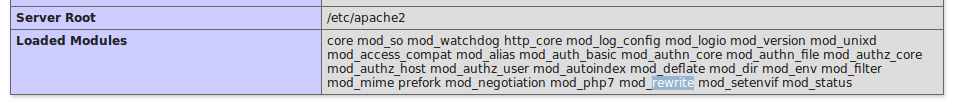

Services Web Style d'architecture REST
John Samuel
CPE Lyon
Année: 2018-2019
Courriel: john(dot)samuel(at)cpe(dot)fr

John Samuel
CPE Lyon
Année: 2018-2019
Courriel: john(dot)samuel(at)cpe(dot)fr
Rémarques: Programmation en live
https://www.example.com/index.html
ou
https://www.example.com/index.php
ou
https://www.example.com/
https://www.example.com/index.php?lang=fr
https://www.example.com/index.php?lang=en
https://www.example.com/index.php?lang=es
ou
https://www.example.com/fr/index.php
https://www.example.com/en/index.php
https://www.example.com/es/index.php
https://www.example.com/fr/index.php
https://www.example.com/en/index.php
https://www.example.com/es/index.php
ou
https://www.example.com/fr/
https://www.example.com/en/
https://www.example.com/es/
https://www.example.com/index.php?operation=listStudents
ou
https://www.example.com/students/
https://www.example.com/index.php?operation=showStudent
https://www.example.com/index.php?operation=AddStudent
https://www.example.com/index.php?operation=deleteStudent
https://www.example.com/index.php?operation=updateStudent
ou
https://www.example.com/students/1/
$ sudo apt install apache2 php7.0 libapache2-mod-php7.0
$ sudo a2enmod rewrite
$ sudo service apache2 restart
<?php
phpinfo()
?>

Vérifier le fichier /etc/apache2/sites-available/000-default.conf
DocumentRoot /var/www/html
..
<Directory "/var/www/html">
AllowOverride All
</Directory>
$ sudo service apache2 restart
DirectoryIndex index.php
DirectoryIndex accueil.php
DirectoryIndex accueil.php index.php
RewriteEngine on
RewriteRule ^test.html$ /index.php
RewriteEngine on
RewriteRule "^.+.html$" /index.php
RewriteEngine on
ErrorDocument 404 /404.php
RewriteRule "^(.+)/index.php$" /index.php?lang=$1
RewriteEngine on
RewriteRule "^(.+)/index.html$" /index.php?lang=$1
RewriteEngine on
RewriteRule ^students/(.+)/$ /students/index.php?id=$1
RewriteRule ^students/(.+)/(.+)$ /students/index.php?id=$1¶m=$2
RewriteEngine on
ErrorDocument 404 /404.php
<fieldset>
<legend>Etudiant.e</legend>
<div>
<label for="nom">Nom</label><input type="text" id="nom" name="nom"/>
</div> <div>
<label for="prenom">Prénom</label><input type="text" name="prenom"/>
</div> <div>
<label for="prenom">Diplôme</label>
<select id="diplome" name="diplome">
<option>IRC</option>
<option>ETI</option>
</select>
</div>
</fieldset>
<form action=request.php" method="get" >
<fieldset>
...
</fieldset>
<button type="submit">Submit</button>
</form>
<?php
$method = $_SERVER['REQUEST_METHOD'];
echo "method: ".$method;
?>
<form action=request.php" method="get" >
<fieldset>
...
</fieldset>
<button type="submit">Submit</button>
</form>
http://localhost/request.php?nom=aple&prenom=mango&diplome=IRC
method: GET
<form action=request.php" method="post" >
<fieldset>
...
</fieldset>
<button type="submit">Submit</button>
</form>
http://localhost/request.php
method: POST
<form action=request.php" method="PUT" >
<fieldset>
...
</fieldset>
<button type="submit">Submit</button>
</form>
http://localhost/request.php?nom=aple&prenom=mango&diplome=IRC
method: GET
<form action=request.php" method="delete" >
<fieldset>
...
</fieldset>
<button type="submit">Submit</button>
</form>
http://localhost/request.php?nom=aple&prenom=mango&diplome=IRC
method: GET
RewriteEngine on
ErrorDocument 404 /404.php
RewriteRule "^(.+)/index.php$" /index.php?lang=$1
<?php
$language = "fr";
if($_GET["lang"]) {
$language = $_GET["lang"];
}
if($language == "en") {
echo "Hello!";
}
else if($language == "fr") {
echo "Bonjour!";
}
?>
<?php
if($_GET["nom"] &&
$_GET["prenom"] ) {
echo "Bonjour! ".$_GET["prenom"]." ".$_GET["nom"];
}
?>
<?php
if($_POST["nom"] &&
$_POST["prenom"] ) {
echo "Bonjour! ".$_POST["prenom"]." ".$_POST["nom"];
}
?>
<?php
if($_GET["nom"] &&
$_GET["prenom"] ) {
echo "Bonjour! ".$_GET["prenom"]." ".$_GET["nom"];
}
?>
<?php
if(strcasecmp($_SERVER["REQUEST_METHOD"], "POST") == 0) {
if($_POST["nom"] &&
$_POST["prenom"] ) {
echo "Bonjour! ".$_POST["prenom"]." ".$_POST["nom"];
}
}
else {
if($_GET["nom"] &&
$_GET["prenom"] ) {
echo "Bonjour! ".$_GET["prenom"]." ".$_GET["nom"];
}
}
?>
$ tail /var/log/apache2/access.log
127.0.0.1 - - [14/Nov/2018:14:46:49 +0100] "GET / HTTP/1.1" 200 3477 "-"
"Mozilla/5.0 (X11; Ubuntu; Linux x86_64; rv:63.0) Gecko/20100101 Firefox/63.0"
127.0.0.1 - - [14/Nov/2018:14:46:49 +0100] "GET /icons/ubuntu-logo.png HTTP/1.1" 304 180 "http://localhost/"
"Mozilla/5.0 (X11; Ubuntu; Linux x86_64; rv:63.0) Gecko/20100101 Firefox/63.0"
127.0.0.1 - - [14/Nov/2018:14:46:49 +0100] "GET /favicon.ico HTTP/1.1" 404 294 "-"
"Mozilla/5.0 (X11; Ubuntu; Linux x86_64; rv:63.0) Gecko/20100101 Firefox/63.0"
$ tail /var/log/apache2/error.log
[Wed Nov 14 09:53:39.563044 2018] [mpm_prefork:notice] [pid 849]
AH00163: Apache/2.4.29 (Ubuntu) configured -- resuming normal operations
[Wed Nov 14 09:53:39.563066 2018] [core:notice] [pid 849]
AH00094: Command line: '/usr/sbin/apache2'
[Wed Nov 14 11:35:35.060638 2018] [mpm_prefork:notice] [pid 849]
AH00169: caught SIGTERM, shutting down


Une architecture REST doit respecter les six contraintes suivantes
Un client REST n'a besoin d'aucune connaissance préalable sur la façon d'interagir avec une application ou un serveur particulier au-delà d'une compréhension générique de l'hypermédia.
Différents niveaux [2]
https://www.example.com/students/
https://www.example.com/students/1/
https://www.example.com/students/1/module1/
Les codes les plus courants sont :
$ curl example.com
$ curl -I http://localhost/index.php
HTTP/1.1 200 OK
Date: Thu, 26 Apr 2018 18:54:18 GMT
Server: Apache/2.4.18 (Ubuntu)
Content-Length: 14
Content-Type: text/html; charset=UTF-8
$ curl http://localhost/index.php
$ curl -X GET http://localhost/index.php
$ curl -X POST http://localhost/index.php
$ curl -X POST --data 'user:abc' http://localhost/index.php
$ curl -X POST -d @file.json http://localhost/index.php
$ curl -X PUT http://localhost/index.php
$ curl -X PUT --data '' http://localhost/index.php
$ curl -X PUT -d @file.json http://localhost/index.php
$ curl -X DELETE http://localhost/index.php
$_SERVER['REQUEST_METHOD']
$data = json_decode(file_get_contents('php://input'), true);
echo http_response_code(521);
RewriteEngine on
ErrorDocument 404 /404.php
RewriteRule ^(.+)/$ /index.php?resource=$1
RewriteRule ^(.+)/(.+)$ /index.php?resource=$1&id=$2
Le WSDL (Web Services Description Language) sert à décrire